Engaging with the Artistic Space
A freshman seminar on digital artistry. We treat the tools like instruments. You learn one, outgrow it, pick up the next, and somewhere along the way your voice shows up.
Or pick a section to jump there.
Animation and Art Tools
Tools for drawing, moving pictures, and making your own letters. No software to buy, and nothing you make gets uploaded.
Paper Flipbook, one sheet becomes a GIF
Print a grid, draw a frame in every square, and snap one photo of the page. The tool finds the corners, cuts the frames apart, and plays them back. Tune the speed, skip a frame, and export a GIF, a video, or a sprite sheet.
Open the flipbook ›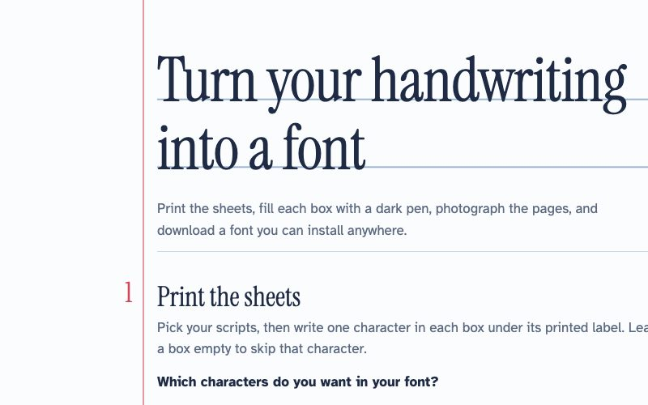
Handwritten Font, type in your own hand
Fill in the printed sheets with a dark pen, photograph them, and download a real font file you can install on your laptop or phone. Use it for title cards, posters, and album art.
Make your font ›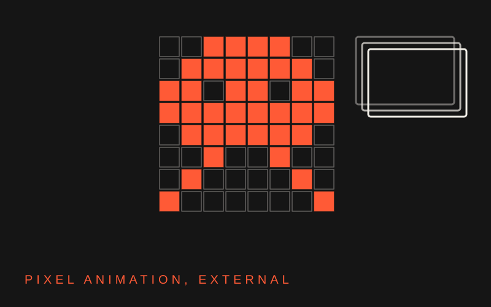
brush.ninja
A free browser pixel-animation tool: draw frame by frame with an onion skin, then export as a GIF. Good for quick, loose sketches when you do not need layers or keyframes.
Open brush.ninja ›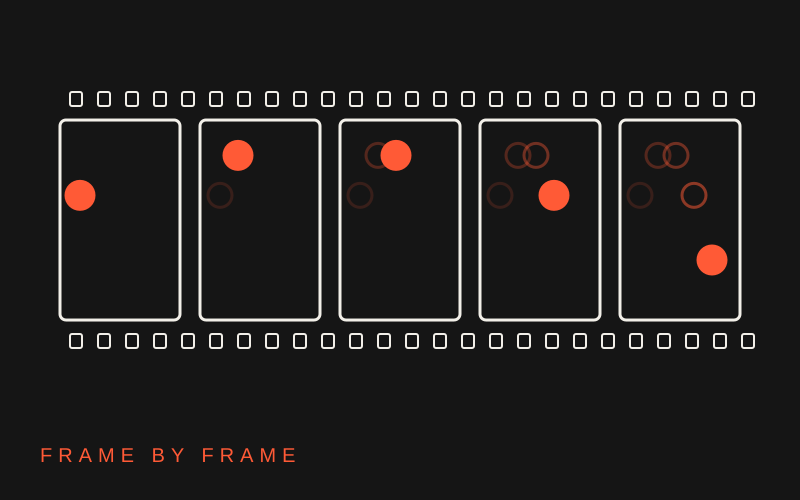
Flipbook Toolkit, animate in your browser
Draw frame by frame with an onion skin, capture stop motion from your camera, or draw one thing and move it with keyframes. Layers, shapes, versions you can go back to, GIF and video export. Nothing to install and nothing leaves your computer.
Open the studio ›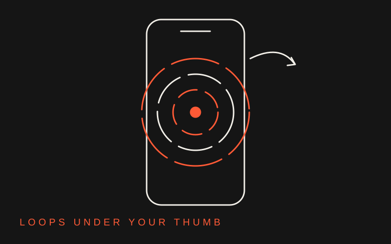
Pocket Loops, animate with your thumb
Short loops that spin together at one tempo. Draw while they play, or pause and flick frame by frame against an onion skin. Keep a thread still for the background, shoot stop motion into a photo thread, draw straight lines, steal colors with the camera. Export a GIF or a ten-second video.
Open Pocket Loops ›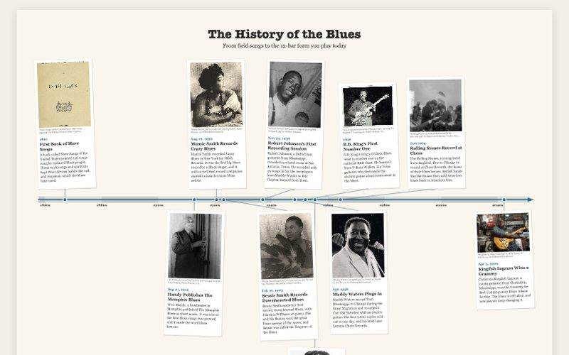
Timeline Maker, your story on a line
Drop in photos, give each one a date, and the events put themselves in order. Bend the line into a wave, a spiral, or a board game path. Add a second timeline to compare two lives. When it is ready, play it one event at a time or export it as a PNG.
Make a timeline ›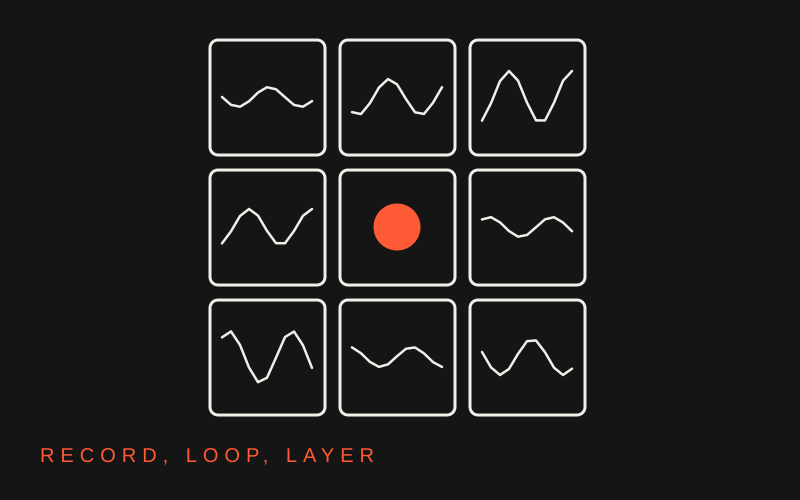
LoopGrid, a video looper
Record yourself with the spacebar and each take loops right away, in time with the others, in a grid of tiles. Layer up to nine, tap a tempo with a click and count-in, and record the whole performance as a video. It runs in your browser, and there is a Mac app to download too.
Open LoopGrid ›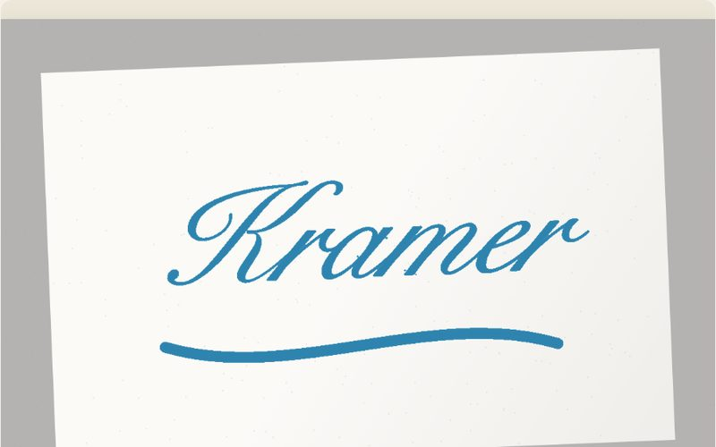
Ink to 3D, your handwriting as a model
Write your name big, snap a photo, and get a 3D model of your own handwriting to drop into Blender. Clean up the ink with a brush, set the depth, and watch it spin before you download.
Make it 3D ›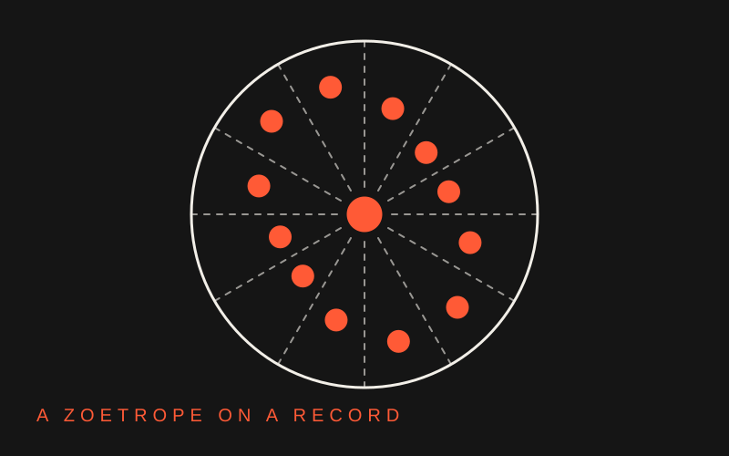
Zooparty, a zoetrope on a spinning record
Dotted lines cut a record into frames. Draw in the top slice, step to the next, then spin it with the strobe on and watch it move. Echo a drawing into every frame, zoom in for details, drop in photos, set the speed, and print a disc for a real turntable.
Open Zooparty ›Guides
Short guides to the tools we use together: stop motion on the iPad, a tour of free art tools that run in your browser, and the graphs from class.

Stop motion in Procreate
Three short tutorials that get you fluent with Animation Assist on the iPad. Watch the tool tour first, then a project-based walkthrough, then a motion-designer's framing if you want vocabulary for crit.
Read the guide ›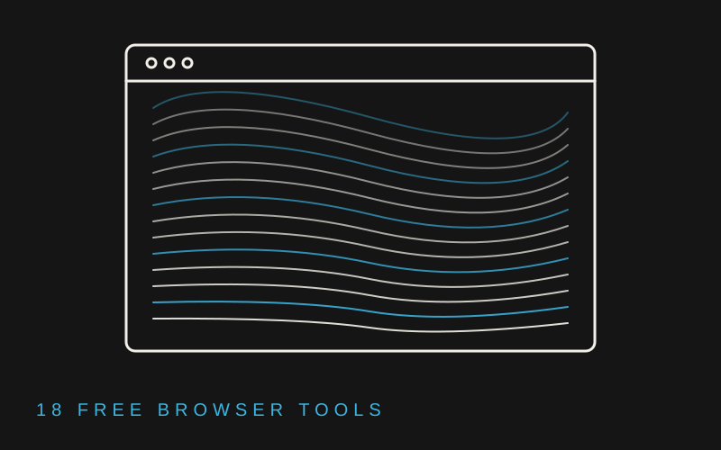
Exploring digital art making
Eighteen free browser tools for playful visual art: code-based generative art, Google's experiments playground, stop motion with no software to buy, quick photo effects, and letters that morph and bounce on their own. Plus two Adobe Express animation tutorials, since Berklee already gives you that account.
Read the guide ›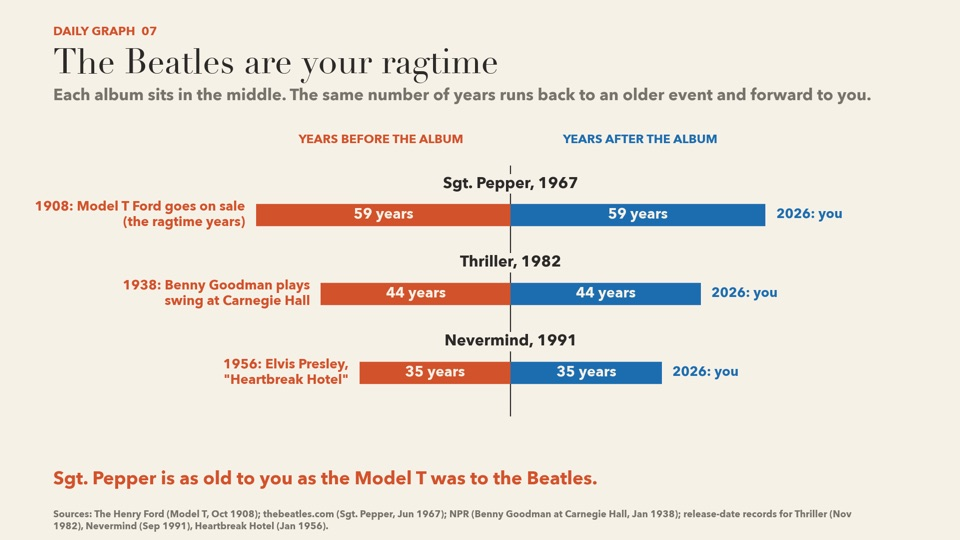
Daily Graphs
The graphs from class, all in one place. Each one puts two things side by side, like microchips and sprinters, or planets and playlists. Open a tile for the story behind a graph, then follow the reading links.
See the graphs ›Procreate
Drawing and frame-by-frame animation on the iPad.
Simple Procreate Animations
A playlist of small animations you draw and animate start to finish, beginning with a floating ghost. Pick any video that looks fun after the first one.
Open the playlist ›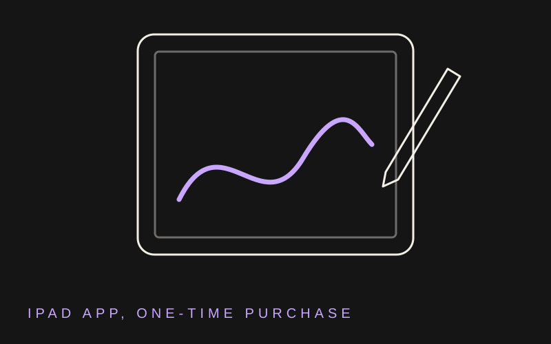
Get Procreate
The iPad drawing and animation app from Savage Interactive. A one-time purchase with no subscription. Check whether your iPad already has it before you buy.
Open the App Store ›Blender
Free 3D software for modeling, animation, and rendering.

Blender for absolute beginners
Start with moving around and the basic controls. More videos will be added as the semester goes on.
Open the playlist ›Blender templates
Small scenes to open and change: a room, a name sign, orbiting cameras, physics, cloth. See a screenshot of each one first.
See the templates ›Blender.org
The official home of Blender. Download it for free, and find the manual and release notes.
Go to blender.org ›Cavalry
Free 2D motion design. Shapes, duplicators, and behaviours do the animating for you.

Cavalry, a beginner playlist
Six short tutorials, all doable in the free version: your first scene, making things move, staggered duplicates, voxelized type, cycling letters, and animation driven by sound.
Open the playlist ›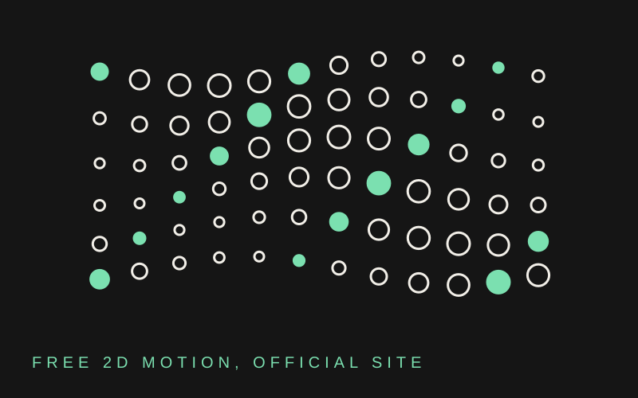
Cavalry.studio
The official home of Cavalry. Download the free version here. It covers every video in the playlist.
Go to cavalry.studio ›Blues
Everything built to get the 12-bar blues into your ear and under your fingers before the midterm.
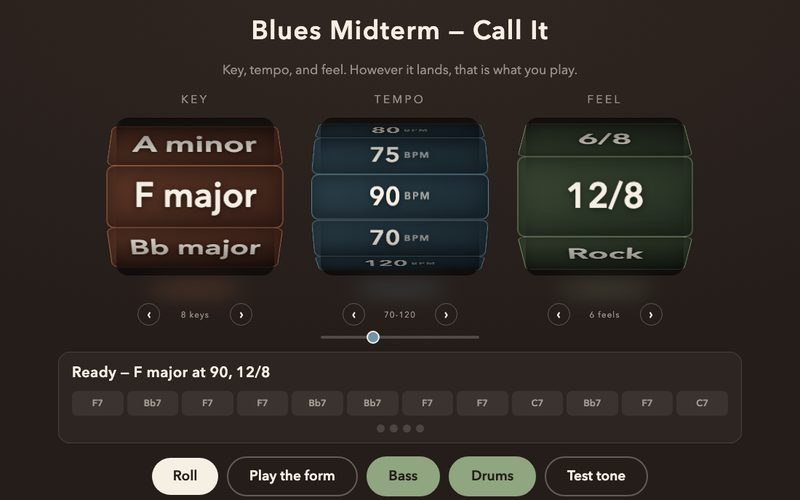
Blues Randomizer, practice for the midterm
Three dice call a key, a tempo, and a feel, and a synthesized band plays the 12-bar blues underneath so you can play along. The same dice I will roll on the midterm, running in your browser from now until then. Narrow the pool to three keys while you are starting out, and widen it as they stop scaring you.
Roll the dice ›The 12 Blocks, a walkable blues
The 12-bar blues animated as a neighborhood. Each chord owns its buildings, the crosswalks are the barlines, and a live synthesized band keeps the walk in time. Major or minor blues, any key, five grooves. This is my take on the Week 6 assignment before I hand it to you.
Take the walk ›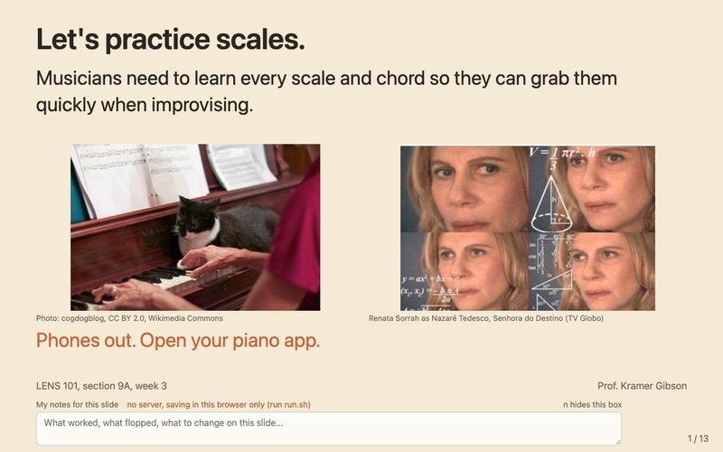
Scales, Chords, Blues
The Week 3 walkthrough: a major scale, its Mixolydian cousin, how each scale degree stacks into a chord, and how those chords carry a 12-bar blues. Interactive bass diagram plus a piano/bass zoom for every key.
Open the deck ›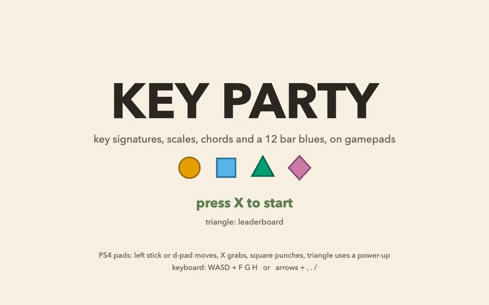
Key Party, a music theory party game
Two to four players on gamepads race to grab the right sharps and flats, run the notes of a scale, find the chord, and survive 12 Bar Blues Lava, where every note outside the chord is lava.
Start the party ›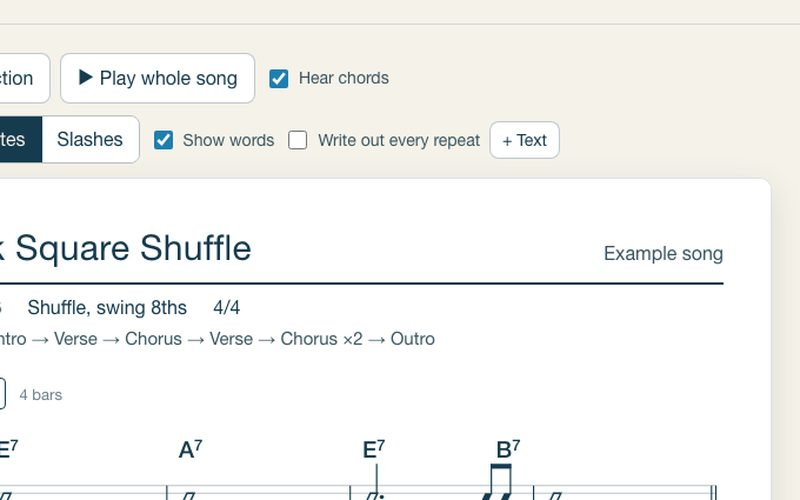
Chord Drop, a chord chart with the rhythm in it
Type your song's chords, play along with a drum groove, and tap the space bar each time the chord changes. It snaps your taps to the beat and prints a chart that shows the band exactly when each chord lands and how long it rings.
Chart a song ›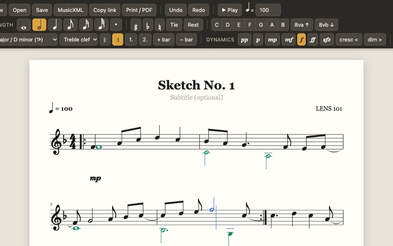
Score Sketch, sheet music at typing speed
Type letter names and the notes land on the staff. Add a second voice, repeats, dynamics, key and time changes, and text boxes, hear it played back, then print a PDF or export MusicXML for MuseScore or Noteflight.
Write some music ›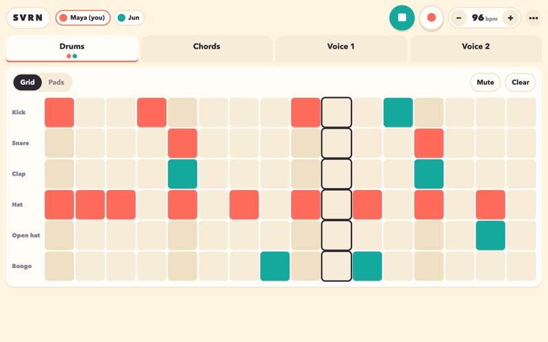
Jam Box, a beat you build with friends
Up to four players on their own phones build one loop together: drums, chords, and two melody voices. Every tap lands on every phone, so if a friend changes the drums, they change for you too. Bring headphones.
Start a jam ›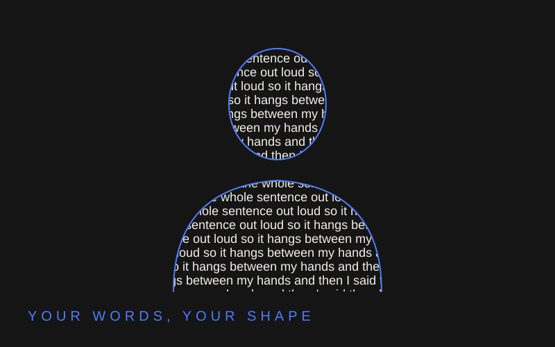
Speech Silhouette, your body written in your own words
The camera cuts your body out of the room and fills it with the last thing you said. Raise your hands and the sentence hangs between your fingertips. Paint the letters with the camera's colors and record a video.
Step into it ›